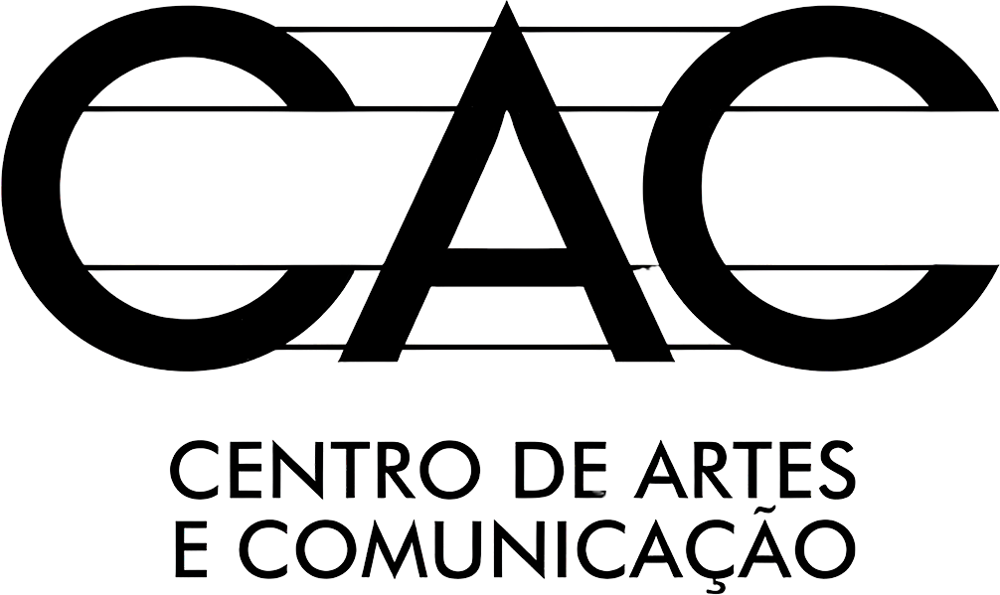
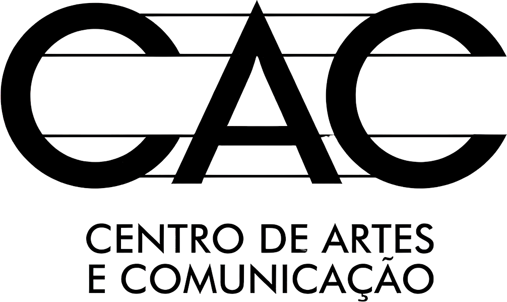

ERRE MARTIN FALA
SOBRE LUZ CÂMERA OCUPAÇÃO
SOBRE LUZ CÂMERA OCUPAÇÃO
“Esse curta-metragem é um marco na minha vida não apenas por ter sido a minha primeira experiência como diretor, dirigindo um roteiro meu, mas pelo sentimento inédito de encontro com uma profissão. Foi no set de LCO que tive a certeza de que a minha felicidade, o sentido da minha vida, estaria em dar vida às minhas criações. Tenho como um dos momentos mais transcendentais de minha existência aqueles poucos segundos em que Flávio Calazans passou comigo a sua primeira fala como Deusa Filipe Edwards. Arrepiei inteiro. Sublime!”


 
